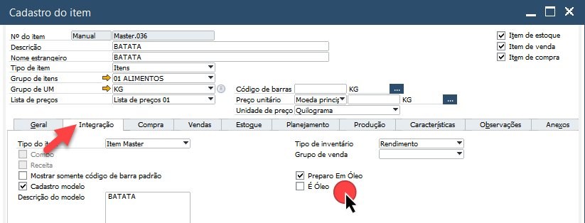
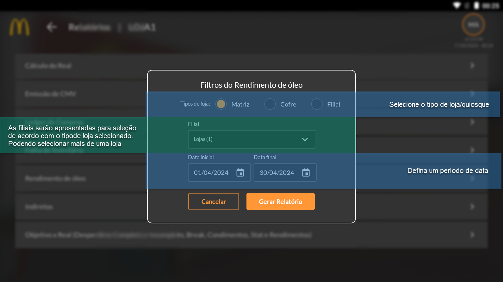
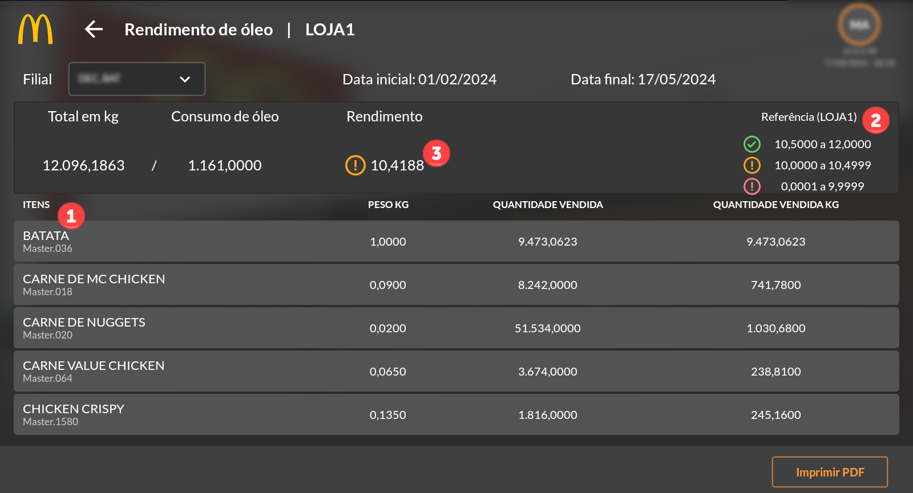
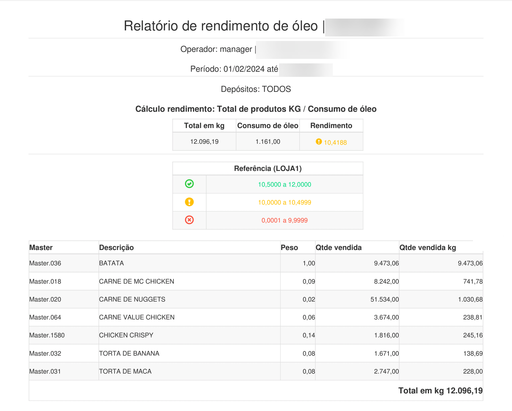

Rendimento de Óleo
O relatório Rendimento de Óleo tem como objetivo controlar o consumo de óleo utilizado pela loja na produção de seus produtos. Essa configuração é feita no cadastro do item na aba Integração do SAP onde pode ser definido se o item é óleo ou preparado com óleo.
O relatório no APP apresentará aas informações de acordo com essas configurações, podendo ser definido uma meta para consumo.
O relatório apresentará os itens configurados como óleo ou produzido com óleo (1), a referência contendo o índice de consumo (2) e o rendimento do óleo (3). Além disso apresenta o total em KG da soma dos itens e o consumo de óleo. Veja também que, para cada item é apresentado o peso, quantidade vendida e quantidade vendida em kg.
Ao clicar em “Imprimir PDF” será gerado um arquivo em PDF para impressão contendo as mesmas informações do aplicativo, assim como demonstra na imagem abaixo.
